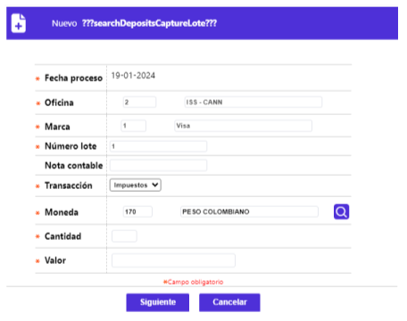
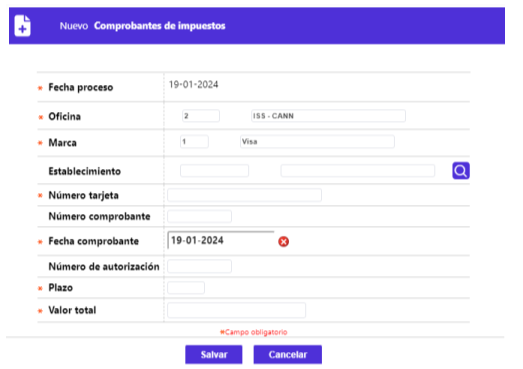
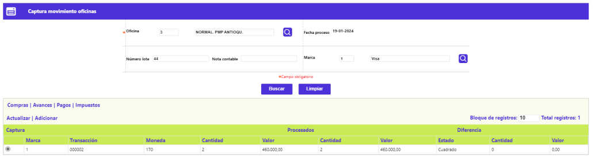
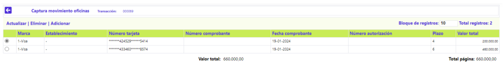
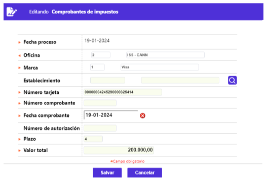

Impuestos - Captura de Movimientos oficina
Luego de diligenciar los campos de la parte superior del formulario Captura movimiento oficinas: el código de la oficina o sucursal de la que se va a capturar movimiento, el Número lote, y la Marca, la Fecha de proceso se muestra por defecto y no es modificable. A continuación, se activa el enlace Adicionar.
Adicionar (- Impuestos): Al activar ese enlace se despliega el siguiente formulario correspondiente al Lote de Impuestos a ingresar:

Descripción de Campos – Lote (Consignación)
Fecha proceso |
Campo de salida o no ingresable, que contiene la fecha del sistema seleccionada en el filtro inicial. |
Oficina |
Campo en el que se muestra el código de la oficina y descripción de la oficina para la cual se va a capturar. |
Marca |
Campo que posee lista de valores poblada mediante la opción Franquicias del Núcleo. Si la entidad requiere generar contabilidad por marca o franquicia, no debe mezclar dentro del mismo lote o tapa movimiento de diferentes franquicias. |
Número lote |
Campo numérico de 3 dígitos, obligatorio, corresponde al grupo o porción de movimiento a capturar, dato ingresado en el formulario inicial o anterior. En este formulario se hereda o muestra dicho valor. |
Nota contable |
Campo numérico de 3 dígitos, no obligatorio, corresponde a la porción de movimiento a capturar agrupado o totalizado por montos. |
Transacción |
Campo obligatorio que posee lista de valores tipo combo, de la que debe seleccionarse entre: Compras, Avances, Pagos o Impuestos, el tipo o clase de movimiento a ingresar. |
Moneda |
Campo obligatorio en el que se puede ingresar o seleccionar de la lista de valores poblada en la opción Moneda el código que aplica para el movimiento a ingresar. |
Cantidad |
Campo obligatorio, numérico que en máximo dos dígitos, debe contener el número de comprobantes de avances que se van a ingresar. |
Valor |
Campo numérico con capacidad para una suma hasta de 16 dígitos incluidos dos decimales, contiene el monto o cuantía de las operaciones efectuadas por transacción. |
Al activar el botón especial Siguiente, el sistema realiza algunas validaciones, si existe alguna inconsistencia le notifica al usuario, en caso contrario, despliega el siguiente formulario:

Descripción de Campos – Comprobantes de Impuestos
Fecha proceso |
Campo de salida o no ingresable, que contiene la fecha del sistema seleccionada en el filtro inicial. |
Oficina |
Campo en el que se muestra el código de la oficina y descripción de la oficina para la cual se va a capturar. |
Marca |
Campo que posee lista de valores poblada mediante la opción Franquicias del Núcleo. Si la entidad requiere generar contabilidad por marca o franquicia, no debe mezclar dentro del mismo lote o tapa movimiento de diferentes franquicias. |
Establecimiento |
Campo de salida o no ingresable, de los formularios previos hereda o muestra el código junto con el nombre del comercio en cuya cuenta se debe depositar el valor neto del movimiento a ingresar. |
Número tarjeta |
Campo alfanumérico de 23 dígitos, no obligatorio, en el que se digita el número de la tarjeta mediante la cual se realiza el avance, el sistema valida el bin de la misma y asigna los ceros a la izquierda hasta completar la longitud total del campo. |
Número comprobante |
Campo numérico de 7 dígitos, no obligatorio, en el que se registra el número del voucher o comprobante correspondiente al avance. |
Fecha comprobante |
Campo tipo fecha, en formato DD-MM-AAAA, debe contener la fecha física de cada uno de los comprobantes, es la base para determinar la antigüedad de los mismos y verificar que no excedan el plazo máximo para su consignación. |
Número de autorización |
Campo alfanumérico de 6 dígitos, no obligatorio, en el que se registra el número de autorización de la transacción asignado por el sistema o por la franquicia. |
Plazo |
Campo numérico de 2 dígitos, no obligatorio, en el que se relaciona la cantidad de periodos solicitados por el tarjetahabiente en el voucher para cancelar su avance. En caso de no digitarse el sistema tomará los valores señalados por defecto en los parámetros de Transacciones por empresa. |
Valor total |
Campo numérico con capacidad para una suma hasta de 16 dígitos incluidos 2 decimales, no obligatorio, que contiene el valor del avance realizado. |
Luego de capturados los datos de cada comprobante y activar el botón especial ubicado en la parte inferior derecha, se muestra el siguiente formulario, en el que se puede observar, además de la relación de los distintos comprobantes que componen el lote (consignación), en resumen, si las cifras del movimiento presentan o no diferencias, el cual dispone de los enlaces: Actualizar y Adicionar:

Adicionar (- Captura movimiento oficinas): Al activar ese enlace se muestra el mismo formulario, cuya funcionalidad se ya se describió más arriba como Lote (Consignación) y lo que permite es agregar la información de un nuevo grupo de comprobantes que, aún no había sido ingresado.
Actualizar (- Captura movimiento oficinas):Al activar ese enlace se muestra el mismo formulario, cuya funcionalidad se ya se describió más arriba como Lote (Consignación) y lo que permite es modificar datos de la misma o de los comprobantes que la integran.
Al no evidenciarse descuadre en las cifras de la consignación y sus comprobantes, al activar el botón especial ubicado en la parte inferior derecha, se muestra el siguiente formulario, el cual dispone de los enlaces: Actualizar, Eliminar y Adicionar:

Adicionar (- Comprobantes de impuesto): Al activar ese enlace se muestra el mismo formulario, cuya funcionalidad se ya se describió más arriba como Comprobantes de impuesto y lo que permite es agregar la información de otro comprobante que, perteneciendo a la misma consignación, aún no había sido ingresado.
Actualizar (- Comprobantes de impuesto):Al activar ese enlace, se despliega un formulario en el que los únicos campos no modificables son: Fecha proceso, Oficina, Marca y Establecimiento:
